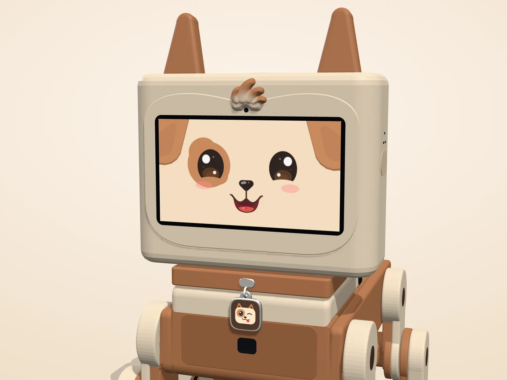

Spike, the cheeky pup
Warm, playful and a little bit rude. He tells jokes, plays rock paper scissors, teases you into drinking your water and roasts you when you've earned it. Tell him you had a long day and the teasing stops.
Spike is a cheeky pup who lives with you: on your computer, on your phone, and soon on your desk. He chats, remembers, wakes you up and keeps you company, and he has a friend called Spicy.

Swap between them any time. Each has a face, a voice and a way of talking to you of their own.
Warm, playful and a little bit rude. He tells jokes, plays rock paper scissors, teases you into drinking your water and roasts you when you've earned it. Tell him you had a long day and the teasing stops.
Spike's friend, with more attitude and less patience. Smug, dry and secretly fond of you, though she would never say so.
These are the things Spike for Windows does now. The phone app does most of them too, and is in testing.
Press Space and talk, or just start typing. He hears his name, answers out loud, and shows what he heard.
Tell him about yourself and he remembers, on your computer. See everything he knows, and make him forget one thing or all of it.
One click, or just ask: "remind me to stand up in an hour". He wakes you with yips, then barks, then jokes.
Start from a face like Classic Pup, Beagle or Husky, then change every feature, colour and size. Save favourites and share a face with a code.
Natural voices from Google's Gemini give Spike and Spicy their sound, with Windows' own voice as a backup.
A mini window keeps his face on top of your work. Close the app and he waits in the tray.
Nine starting faces, seven moods to try them in, and every eye, ear, patch and colour to change. Six save slots, and a share code for friends.


The robot is a prototype being built now. This is only what his real body can do, checked against his motors and his balance. Anything it can't do, the apps don't offer.
Desk-edge stops live in his firmware and are always on; no app can switch them off.
About the robotFree on the Microsoft Store for Windows 10 and 11.
Get it onMicrosoft Store